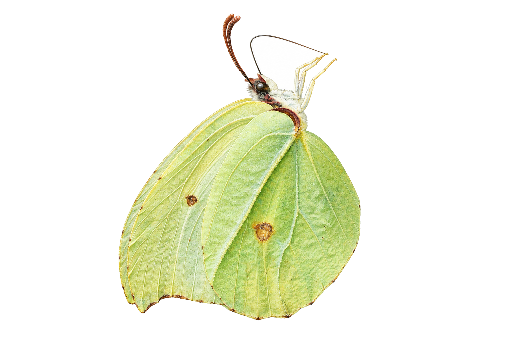

シロチョウ科 · 028 / 165
タイワンヤマキチョウ
Gonepteryx amintha

特徴・見分け方
大きな黄色い翅を持つ迷蝶。後翅の外縁の突起は目立たない。
雌雄の違い
雌では翅表の黄色部が黄白色となる。
大きさ
開長（左右の翅を広げた幅）60–70 mm。
沖縄の島別記録
記録のある島の例：与那国島。記録は現在の定着を保証しない。
生息環境
県内では与那国島の記録。県内での恒常的な好適環境は未確認。
生態・識別上の補足
記録島・食草は地域図鑑に基づく要約。産卵のみの記録、飼育情報、海外の一般情報は、県内での野外繁殖とは区別する。
幼虫・食草
確認した地域資料に県内での食草・繁殖の記載はない。
参照元・参考資料
- 沖縄蝶類生態図鑑：タイワンヤマキチョウ
資料内の参照日: 2026-11-10 - 日本の蝶：タイワンヤマキチョウ
資料内の参照日: 2026-11-10
掲載内容は提供データ（2026年11月10日更新）に基づきます。記録島は現在の定着や観察の容易さを保証しません。イラストは参考表現で、同定には実物の形態と参照資料を併せて確認してください。